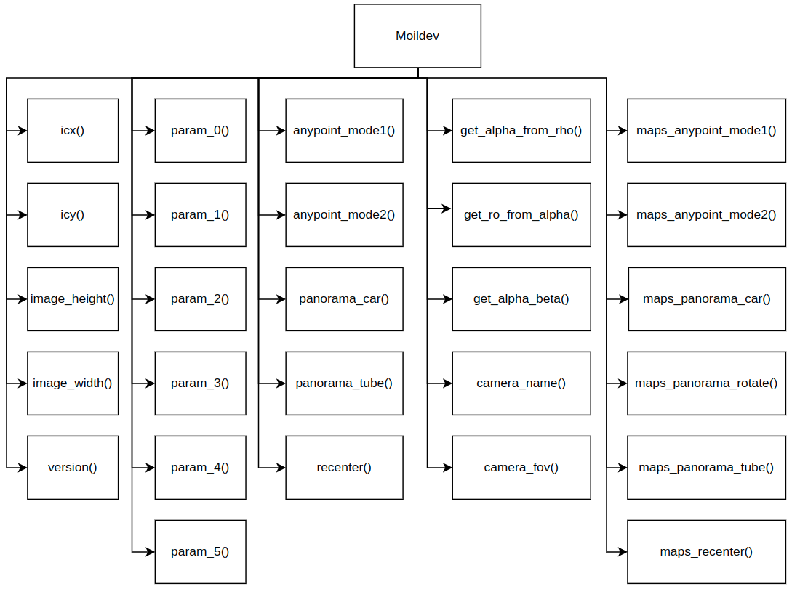

API Reference
Moildev package
Moildev Library is a collection of functions to developments fisheye image applications. Initially, this library is written for C++ programing language. In the recent decade, python is a programming language that is very popular for developers. That is the reason why we are developing the Moildev library for python.
- class Moildev(file_camera_parameter=None, camera_type=None, **kwarg)[source]
Bases:
objectBefore the ensuing functions can function properly, the camera parameter must be configured at the start of the program. The camera parameter is the outcome of the MOIL laboratory’s calibration camera.
- Parameters
file_camera_parameter – *.json file
camera_type – the name of the camera type used (use if yore pass the parameter using *.json file)
cameraName – the name of the camera used
cameraFov – camera field of view (FOV)
sensor_width – size of sensor width
sensor_height – size of sensor height
Icx – center image in x-axis
Icy – center image in y-axis
ratio – the value of the ratio image
imageWidth – the size of width image
imageHeight – the size of height image
calibrationRatio – the value of calibration ratio
parameter5 (parameter0 ..) – intrinsic fisheye camera parameter get from calibration
for more detail, please reference https://github.com/perseverance-tech-tw/moildev
- classmethod version()[source]
Showing the information of the version moildev library.
- Returns
Moildev version information
- property camera_name
Get camera name used.
- Returns
Camera name (string)
- property camera_fov
Get Field of View (FoV) from camera used.
- Returns
FoV camera (int)
- property icx
Get center image x-axis from camera used.
- Returns
Image center X (int)
- property icy
Get center image y-axis from camera used.
- Returns
Image center Y(int)
- property image_width
Get the width of the image used.
- Returns
image width(int)
- property image_height
Get the height of the image used.
- Returns
image height(int)
- property param_0
Get the value of calibration parameter_0 from camera used.
- Returns
Parameter_0 (float)
- property param_1
Get the value of calibration parameter_1 from camera used.
- Returns
Parameter_1 (float)
- property param_2
Get the value of calibration parameter_2 from camera used.
- Returns
Parameter_2 (float)
- property param_3
Get the value of calibration parameter_3 from camera used.
- Returns
Parameter_3 (float)
- property param_4
Get the value of calibration parameter_4 from camera used.
- Returns
Parameter_4 (float)
- property param_5
Get the value of calibration parameter_5 from camera used.
- Returns
Parameter_5 (float)
- maps_anypoint_mode1(alpha, beta, zoom)[source]
Generate a pair of X-Y Maps for the specified alpha, beta and zoom parameters, and then utilize the resulting X-Y Maps to remap the original fisheye image to the target angle image. This function has 2 mode to generate maps anypoint, mode 1 is for tube application and mode 2 usually for car application
- Parameters
alpha – value of zenith distance(float).
beta – value of azimuthal distance based on cartography system(float)
zoom – value of zoom(float)
- Returns
the mapping matrices X mapY: the mapping matrices Y
- Return type
mapX
please reference: https://github.com/perseverance-tech-tw/moildev
- maps_anypoint_mode2(pitch, yaw, roll, zoom)[source]
Generate a pair of X-Y Maps for the specified pitch, yaw, and roll also zoom parameters, and then utilize the resulting X-Y Maps to remap the original fisheye image to the target image.
- Parameters
pitch – pitch rotation (from -110 to 110 degree)
yaw – yaw rotation (from -110 to 110 degree)
roll – roll rotation (from -110 to 110 degree)
zoom – zoom scale (1 - 20)
- Returns
the mapping matrices X mapY: the mapping matrices Y
- Return type
mapX
- maps_panorama_tube(alpha_min, alpha_max)[source]
To generate a pair of X-Y Maps for alpha within 0 … alpha_max degree, the result X-Y Maps can be used later to generate a panorama image from the original fisheye image.
- Parameters
alpha_min – the minimum alpha degree given
alpha_max – the maximum alpha degree given. The recommended value is half of camera FOV. For example, use 90 for a 180 degree fisheye images and use 110 for a 220 degree fisheye images.
- Returns
the mapping matrices X mapY: the mapping matrices Y
- Return type
mapX
please reference: https://github.com/perseverance-tech-tw/moildev
- maps_panorama_car(alpha_max, iC_alpha_degree, iC_beta_degree, p_alpha_from, p_alpha_end)[source]
To generate a pair of X-Y Maps for alpha within 0 alpha_max degree, the result X-Y Maps can be used later to generate a panorama image from the original fisheye image. The panorama image centered at the 3D direction with alpha = iC_alpha_degree and beta = iC_beta_degree.
- Parameters
alpha_max – max of alpha. The recommended value is half of camera FOV. For example, use 90 for a 180 degree fisheye images and use 110 for a 220 degree fisheye images.
iC_alpha_degree – alpha angle of panorama center.
iC_beta_degree – beta angle of panorama center.
p_alpha_end –
p_alpha_from –
- Returns
mapX mapY
please reference: https://github.com/perseverance-tech-tw/moildev
- maps_panorama_rt(alpha_max, iC_alpha_degree, iC_beta_degree)[source]
To generate a pair of X-Y Maps for alpha within 0..alpha_max degree, the result X-Y Maps can be used later to generate a panorama image from the original fisheye image. The panorama image centered at the 3D direction with alpha = iC_alpha_degree and beta = iC_beta_degree.
- Parameters
alpha_max – max of alpha. The recommended value is half of camera FOV. For example, use 90 for a 180 degree fisheye images and use 110 for a 220 degree fisheye images.
iC_alpha_degree – alpha angle of panorama center.
iC_beta_degree – beta angle of panorama center.
- Returns
mapX mapY
please reference: https://github.com/perseverance-tech-tw/moildev
- maps_recenter(alpha_max, beta_degree)[source]
Create maps for reverse image. this can work using input panorama rotation image
- Parameters
alpha_max – max of alpha. The recommended value is half of camera FOV. For example, use 90 for a 180 degree fisheye images and use 110 for a 220 degree fisheye images.
beta_degree – beta angle.
- Returns
maps_x_reverse, maps_y_reverse
- anypoint_mode1(image, alpha, beta, zoom)[source]
Generate anypoint view image. for mode 1, the result rotation is betaOffset degree rotation around the Z-axis(roll) after alphaOffset degree rotation around the X-axis(pitch). for mode 2, The result rotation is thetaY degree rotation around the Y-axis(yaw) after thetaX degree rotation around the X-axis(pitch).
- Parameters
image – source image given
alpha – the alpha offset that corespondent to the pitch rotation
beta – the beta offset that corespondent to the yaw rotation
zoom – decimal zoom factor, normally 1..12
mode – the mode view selected
- Returns
anypoint image
please reference: https://github.com/perseverance-tech-tw/moildev
- anypoint_mode2(image, pitch, yaw, roll, zoom)[source]
Generate anypoint view image. for mode 1, the result rotation is betaOffset degree rotation around the Z-axis(roll) after alphaOffset degree rotation around the X-axis(pitch). for mode 2, The result rotation is thetaY degree rotation around the Y-axis(yaw) after thetaX degree rotation around the X-axis(pitch).
- Parameters
image – source image given
pitch – the alpha offset that corespondent to the pitch rotation
yaw – the beta offset that corespondent to the yaw rotation
roll – the beta offset that corespondent to the yaw rotation
zoom – decimal zoom factor, normally 1..12
- Returns
anypoint image
please reference: https://github.com/perseverance-tech-tw/moildev
- panorama_tube(image, alpha_min, alpha_max)[source]
The panorama image
- Parameters
image – image source given
alpha_min –
alpha_max –
- Returns
Panorama view image
please reference: https://github.com/perseverance-tech-tw/moildev
- panorama_car(image, alpha_max, alpha, beta, left, right, top, bottom)[source]
The function that generate a moil dash panorama image from fisheye camera. the image can control by alpha to change the pitch direction and beta for yaw direction. in order to select the roi, we can control by the parameter such as left, right, top, and bottom.
- Parameters
image – input fisheye image
alpha_max –
alpha – change the pitch direction(0 ~ 180)
beta – change the yaw direction(-90 ~ 90)
left – crop the left image by scale(0 ~ 1)
right – crop the right image by scale(0 ~ 1)
top – crop the top image by scale(0 ~ 1)
bottom – crop the bottom image by scale(0 ~ 1)
- Returns
Panorama image
- recenter(image, alpha_max, iC_alpha_degree, iC_beta_degree)[source]
Change the optical point of fisheye image.
- Parameters
image – input image
alpha_max – max of alpha. The recommended value is half of camera FOV. For example, use 90 for a 180 degree fisheye images and use 110 for a 220 degree fisheye images.
iC_alpha_degree – alpha angle of panorama center
iC_beta_degree – beta angle of panorama center
- Returns
reverse image
- get_alpha_from_rho(rho)[source]
Get the alpha from rho image.
- Parameters
rho – the value of rho given
- Returns
alpha
- get_rho_from_alpha(alpha)[source]
Get rho image from alpha given.
- Parameters
alpha – the value of alpha given
- Returns
rho image
- get_alpha_beta(coordinateX, coordinateY, mode=1)[source]
Get the alpha beta from specific coordinate image.
- Parameters
coordinateX –
coordinateY –
mode –
- Returns
alpha, beta (if you get none, the coordinate is out of range that can cover)
please reference: https://github.com/perseverance-tech-tw/moildev